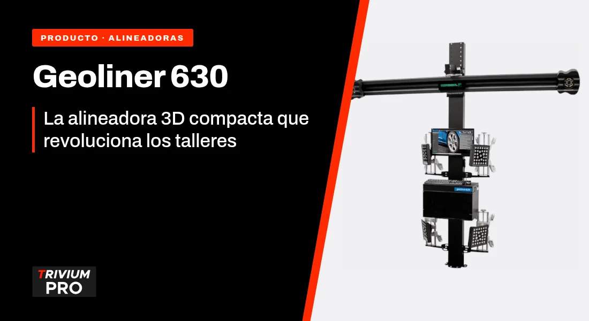

En el mundo de la alineación automotriz, la precisión, la rapidez y la eficiencia del espacio son factores decisivos. El Hofmann Geoliner® 630 fue diseñado pensando en talleres modernos que buscan máxima rentabilidad sin sacrificar espacio ni calidad.
Diseño compacto con grandes beneficios
A pesar de su tamaño reducido, el Geoliner® 630 está equipado con un innovador sistema de vigas y postes integrados que ocupa un espacio mínimo en el taller. Además, cuenta con almacenamiento para impresoras y objetivos, optimizando cada metro cuadrado disponible.
Funciones destacadas
- Abrazaderas AC200
Garras autocentrantes de dos lados que aseguran un agarre firme y rápido, incluso sobre tapacubos.

- Servicios en la nube
Guardá datos de alineación en un servidor seguro y accedé a ellos desde cualquier dispositivo para enviar informes por correo o imprimirlos. - EZ-TOE
Tecnología que permite girar ruedas delanteras y ajustar puntos difíciles sin perder lecturas de convergencia. - Sistema de notificación inteligente
Detecta problemas de suspensión o errores ambientales, reduciendo tiempos muertos y mejorando la eficiencia. - Compensación rápida y flujo optimizado
Elimina pasos innecesarios y acelera los procesos de alineación, aumentando la productividad diaria.

- Haz de inclinación controlado a distancia
Más comodidad y seguridad para los técnicos en el uso del equipo. - VODI™ (Indicador Direccional de Orientación de Vehículos)
Guía visual con luces LED rojas y verdes para facilitar la alineación incluso sin tener el monitor a la vista.

- Tecnología de cámara XD
Cámaras de alta definición que monitorean constantemente la alineación y detectan problemas potenciales en tiempo real.
La solución ideal para talleres independientes
Gracias a su diseño práctico, funciones inteligentes y soporte en la nube, el Geoliner® 630 es la solución definitiva para talleres que buscan servicios de alineación de alta rentabilidad, con la flexibilidad de utilizar incluso una tableta como pantalla secundaria inalámbrica.
Conclusión
El Geoliner® 630 no solo ahorra espacio, sino que también multiplica la eficiencia y productividad de los talleres modernos. Si querés llevar tu servicio de alineación al siguiente nivel, este equipo es la inversión indicada.
¿Querés más información sobre el Geoliner® 630?
Hablá con un especialista y descubrí cómo este equipo puede transformar tu taller.
💬 Contactar por WhatsApp